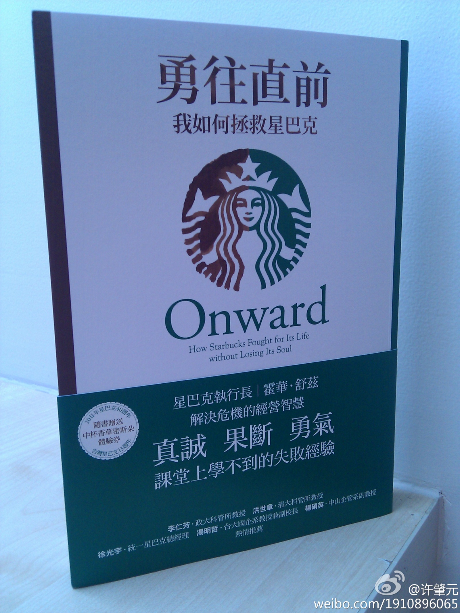

柔柔爸爸妈妈今年也结婚十年了，聊天时说起北京市的离婚率已逼50％，照目前这个趋势发展，以后不离婚的会成为少数。按照朋友会影响你的肥胖度理论，如果朋友中离婚的人比例大，你离婚的可能性也会比较高。推论：要维持婚姻，就别总和离婚的人混一起。
小到部门，其实员工构成相当同质化。多元需要能欣赏很不同于自己的人，这对很多强势的人来说，很难。@刘松--云时代:一种方式无法支撑现代的多元经济模式：有时与体制内的高级领导们交谈，发现他们很多都是明智的，很多为中国无法获得核心技术的创新能力发愁，即使在很高层也有增长的无奈和路径依赖。然而他们的共性是，只以一种温和的家长方式希望有突破。多元经济模式只能靠人的多元化，归根到底，是对多元化人的尊重
看过他的另一本＜把心注入＞。看完之后的感觉是，很喜欢这个星巴克的创使人。@许肇元:<新书推荐：勇往直前-我如何拯救星巴克>舒兹在2000年卸下CEO职位，转任董事长。2008年回锅重任CEO.书里描述星巴克如何回到一个受人尊敬的高利润企业。舒兹领导哲学：不鼓励一味争强好胜，强调以正当手段取胜。他相信灵魂，热情，道德，爱，价值观，服务即生活，勇于承担社会责任。最后的利润是比然的。 
我对孩子态度上，自己做不到的通常不会去要求孩子做。发现很多父母不这样，比如自己大吃冰其淋，而控制孩子三天才能吃一小根；自己睡懒觉，要求孩子早起；自己狂打游戏，严禁孩子玩游戏；自己普通，要求孩子优秀。明俊态度和我相反，认为父母做不到的，可以要求孩子做到，孩子需要父母管教和督促。
听家在内蒙的同事说，草原7，8月份去最好。朋友几人商议筹化个家庭团去玩。今天刚得知消息，锡林郭勒那里出现暴乱，似乎是民族矛盾引发，有游行，有封锁，有镇压。计划暂时取消，现在国内旅游貌似风险不小。但，微博上怎么没这个消息？